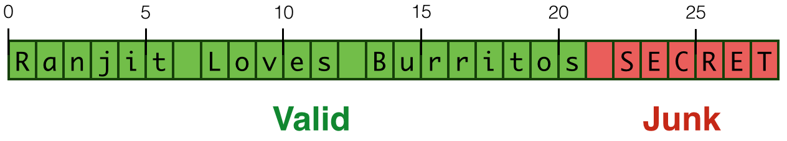
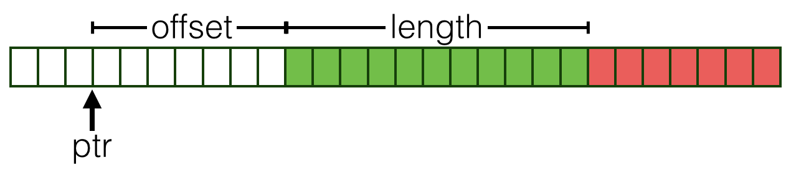

Haskell 的魅力之一，是用优雅的高层代数数据类型（ADT）帮助程序避开许多底层内存错误，例如臭名昭著的 Heartbleed 一类问题。它的另一个吸引力则是：确有需要时，你仍然可以深入底层，直接操作指针，尽可能发挥机器性能。不过，这也重新打开了内存越界错误的大门。
原注：这里当然还要假设编译器和运行时本身没有相关错误。
有没有可能同时拥有底层指针操作的性能，以及高层类型提供的安全保障？下面看看 LiquidHaskell 怎样帮助我们把两者结合起来。
译者说明： 本章使用教程中的简化
ByteString表示和历史 API，演示如何为指针边界写规格。它不是当前bytestring内部布局或现存漏洞的报告；示例中的内存内容也只是原文当时的运行结果。保留这些代码是为了理解验证思路，不应直接复制为生产内存库。
Haskell 也可能发生类似 Heartbleed 的问题#
Haskell 这样的高级语言，最终仍依赖底层运行时、C 代码和机器操作。底层实现中的错误，可能绕过普通类型检查，甚至在人工审查时被忽略。看一个使用 ByteString 截取字符串的例子：
chop' :: String -> Int -> String
chop' s n = s'
where
b = pack s -- down to low-level
b' = unsafeTake n b -- grab n chars
s' = unpack b' -- up to high-level
函数先用 pack 把字符串变为较底层的字节串 b，再取出前 n 个单位，最后用 unpack 转回 String。先定义一个小测试输入：
ghci> let ex = "Ranjit Loves Burritos"
截取长度合法时，结果符合预期：
ghci> chop' ex 10
"Ranjit Lov"
如果指定的前缀长度超出有效范围，程序却可能悄悄暴露相邻内存的内容，如下面的示意图所示：
ghci> chop' ex 30
"Ranjit Loves Burritos\NUL\201\&1j\DC3\SOH\NUL"

译者说明： 这里的演示使用逐字节转换，不是通用 Unicode 编码方案。
ByteString长度按字节计；String长度按Char个数计。只有具体编码模型允许时，才能把这两个长度直接对应起来。
用类型防止越界。 问题已经清楚了，接下来尝试在编译时排除它。我们把系统分成三层，也可以理解为三个模块层次：
- 机器层：
Pointers。 - 库层：
ByteString。 - 用户程序层：
Application。
策略仍然是：为每一层定义精化 API，让上层通过满足下层接口约束，避免相应错误。先从指针开始。
底层指针 API#
先认识 GHC 和运行时提供的基本指针接口，看看危险从哪里进入，再用 LiquidHaskell 给这些入口添加约束。
指针。 GHC 提供抽象类型 Ptr a：
-- | A value of type `Ptr a` represents a pointer to an object,
-- or an array of objects, which may be marshalled to or from
-- Haskell values of type `a`.
data Ptr a
外部指针。 ForeignPtr 是包装后的指针，用于外部函数接口（FFI）相关的交互：
data ForeignPtr a
创建指针。 mallocForeignPtrBytes n 分配 n 字节的缓冲区，再将得到的指针包装成 ForeignPtr：
mallocForeignPtrBytes :: Int -> ForeignPtr a
译者说明： 原文上面的展示签名漏掉了
IO。实际分配是有副作用的；GHC 源码中的签名带有IO，教程完整源码中的规格也写成n:Nat -> IO (ForeignPtrN a n)。这里保留原始展示代码，并在文字中指出，避免把它误认为纯函数。
拆开包装。 要使用 ForeignPtr 中实际的指针，通过下面的接口：
withForeignPtr :: ForeignPtr a -- pointer
-> (Ptr a -> IO b) -- action
-> IO b -- result
withForeignPtr fp act 会让动作 act 使用 fp 包装的 Ptr。这些动作通常是一系列解引用操作，也就是读取或写入。
解引用。 读取指针所指位置使用 peek，更新该位置使用 poke：
peek :: Ptr a -> IO a -- Read
poke :: Ptr a -> a -> IO () -- Write
原注：为突出核心概念，这里的展示省略了
Storable类型类约束。
按偏移访问。 通过指针算术 plusPtr p off，可以将指针 p 向前移动 off 个字节，得到新的地址：
plusPtr :: Ptr a -> Int -> Ptr b
例子。 只看接口有些抽象，下面分配 4 字节缓冲区，并将每个字节填为零：
zero4 = do fp <- mallocForeignPtrBytes 4
withForeignPtr fp $ \p -> do
poke (p `plusPtr` 0) zero
poke (p `plusPtr` 1) zero
poke (p `plusPtr` 2) zero
poke (p `plusPtr` 3) zero
return fp
where
zero = 0 :: Word8
这段代码没有问题；但只要写错一个偏移量，就可能绕过普通类型检查，造成难以发现的内存错误：
zero4' = do fp <- mallocForeignPtrBytes 4
withForeignPtr fp $ \p -> do
poke (p `plusPtr` 0) zero
poke (p `plusPtr` 1) zero
poke (p `plusPtr` 2) zero
poke (p `plusPtr` 8) zero
return fp
where
zero = 0 :: Word8
为指针 API 添加精化约束#
如果写下错误的那一刻，就有人指出越界，该有多好。我们可以让 LiquidHaskell 扮演这个角色，采用三步策略：
- 用精化条件描述指针关联的缓冲区大小。
- 在指针操作中跟踪大小变化。
- 在实际读取、写入时强制检查指针是否合法。
原注：在支持的编辑器或在线环境中，错误可以直接在代码位置显示出来。
描述指针大小。 用一个没有 Haskell 实现的 抽象度量函数，表示相关缓冲区的大小：
-- | Size of `Ptr`
measure plen :: Ptr a -> Int
-- | Size of `ForeignPtr`
measure fplen :: ForeignPtr a -> Int
然后定义别名，表示关联缓冲区大小恰好为 N 的指针：
type PtrN a N = {v:Ptr a | plen v = N}
type ForeignPtrN a N = {v:ForeignPtr a | fplen v = N}
抽象度量函数 适合这种情况：我们知道某项信息客观存在，但无法直接在 Haskell 数据表示里取到它。这里缓冲区由底层代码管理，因此没有现成的 Haskell 字段可读。没有关系，我们只在逻辑规格中使用这些度量函数，不会真的调用它们去计算大小。
原注：这又是一种“幽灵”规格。
精化分配操作。 要求分配大小非负，并声明返回指针对应的缓冲区恰好有 n 字节：
mallocForeignPtrBytes :: n:Nat -> ForeignPtrN a n
译者说明： 这一展示签名同样省略了
IO；它要强调的是输入的n与结果的fplen相等，实际完整类型仍然包含IO。
精化拆包装操作。 传给动作的裸 Ptr，缓冲区大小必须与原 ForeignPtr 一致：
withForeignPtr :: fp:ForeignPtr a
-> (PtrN a (fplen fp) -> IO b)
-> IO b
这是一个有意思的 高阶规格。考虑 withForeignPtr fp act：如果 act 要求的缓冲区大于 fp 实际拥有的大小，LiquidHaskell 就会报告子类型关系不成立，指出潜在越界。反过来，如果动作只需访问更小的范围，在更大的合法缓冲区上执行它是安全的。
例如下面的 zero3 分配 4 字节，只写入前三个字节。传给动作的指针大小可以是 4，即使实际只接触了 3 字节，也完全合法：
zero3 = do fp <- mallocForeignPtrBytes 4
withForeignPtr fp $ \p -> do
poke (p `plusPtr` 0) zero
poke (p `plusPtr` 1) zero
poke (p `plusPtr` 2) zero
return fp
where
zero = 0 :: Word8
精化读取和写入。 只有指针后方的剩余缓冲区非空时，才允许读写一个字节。先定义别名：
type OkPtr a = {v:Ptr a | 0 < plen v}
OkPtr 要求 plen 严格大于零。然后用它约束读写操作：
peek :: OkPtr a -> IO a
poke :: OkPtr a -> a -> IO ()
这些类型的含义是：无论前面怎样移动指针，真正解引用时，剩余范围必须至少容得下要访问的数据。
译者说明： 原文这段文字写成“剩余大小非负”，但其规格实际要求
0 < plen v，读取一个字节时必须严格为正。并且这组简化规格主要针对本章的Word8：如果推广到任意Storable a，还需要考虑sizeOf a、对齐等条件，不能仅凭“至少一个字节”就保证任意类型的访问安全。
精化指针移动。 检查偏移后仍未超出缓冲区，并更新 plen，反映移动后的剩余空间：
plusPtr :: p:Ptr a -> off:BNat (plen p) -> PtrN b (plen p - off)
其中 BNat 是非负且不超过给定上界的整数：
type BNat N = {v:Nat | v <= N}
原注：这个签名不允许负偏移，也就是向左或向后移动。原文提到可以为反方向操作建立相应规格，这里为简单起见不展开。
译者说明： 标准
Foreign.Ptr.minusPtr计算两个指针之间的字节差，不能直接当作“把指针向后移动”的函数使用。后退移动通常会涉及带负偏移的plusPtr及更完整的起始边界模型；上面的受限规格明确没有覆盖这种用法。
原注：你可能已经注意到，这里增强了
plusPtr的约束，在移动时就禁止超出缓冲区。也可以选择更弱的移动规格，等到真正读写内存时再报错。
译者说明： 偏移量可以等于剩余长度，因此允许形成指向末尾之后的指针，此时
plen = 0；但它不能满足OkPtr，所以不允许再解引用。这区分了“能够表示的地址”和“能够读取的地址”。
类型如何阻止越界。 再看清零例子：
exBad = do fp <- mallocForeignPtrBytes 4
withForeignPtr fp $ \p -> do
poke (p `plusPtr` 0) zero
poke (p `plusPtr` 1) zero
poke (p `plusPtr` 2) zero
poke (p `plusPtr` 5) zero -- LH complains
return fp
where
zero = 0 :: Word8
报错内容如下：
Error: Liquid Type Mismatch
Inferred type
VV : {VV : Int | VV == ?a && VV == 5}
not a subtype of Required type
VV : {VV : Int | VV <= plen p}
in Context
zero : {zero : Word8 | zero == ?b}
VV : {VV : Int | VV == ?a && VV == (5 : int)}
fp : {fp : ForeignPtr a | fplen fp == ?c && 0 <= fplen fp}
p : {p : Ptr a | fplen fp == plen p && ?c <= plen p && ?b <= plen p && zero <= plen p}
?a : {?a : Int | ?a == 5}
?c : {?c : Int | ?c == 4}
?b : {?b : Integer | ?b == 0}
错误指出：我们想用 plusPtr 将 p 向前移动 5，也就是 VV == 5；但接口要求 VV <= plen p。当时的环境还知道：
p : {p : Ptr a | fplen fp == plen p && ?c <= plen p && ?b <= plen p && zero <= plen p}
fp : {fp : ForeignPtr a | fplen fp == ?c && 0 <= fplen fp}
withForeignPtr 让我们知道，plen p 与 fplen fp 相等；而后者等于 ?c，即分配时的 4 字节。由于 5 超过了 4，检查器无法证明移动合法，所以拒绝该调用。
假设与保证#
读到这里，你可能会问：peek、poke、mallocForeignPtrBytes 的实现在哪里？怎么知道给它们写的类型是真的？
坦白说，仅靠这里的 LiquidHaskell 验证，我们不能知道。这些操作由它看不到的外部底层实现提供，所以我们是在 假设 或 信任 它们遵守给出的规格。
换句话说，低层 API 的类型描述了我们要求的指针安全契约。接下来能证明的是：建立在这些 API 之上的 Haskell 模块，确实按照契约要求使用了它们。
允许假设边界规格很有价值，因为现实系统经常依赖无法同时验证、甚至没有源码的模块。我们可以先信任这些边界，再证明其余代码相对于这些边界是安全的。
原注：必要时，也可以在运行时检查边界契约；这属于运行时契约检查，不是本章 LiquidHaskell 静态验证的内容。
译者说明：
assume的含义是“把这条规格当作前提”，不是“验证工具已经检查过实现”。假设不正确，依赖它的证明就可能与真实程序行为脱节。接口规格、FFI、编译器和运行时等受信任部分，仍然需要适当的审查与测试。
ByteString API#
接下来使用底层指针 API，实现一个字节串接口，在保持高效的同时约束越界行为。
表示。 教程中的 ByteString 由三个字段构成：
data ByteString = BS {
bPtr :: ForeignPtr Word8
, bOff :: !Int
, bLen :: !Int
}
bPtr指向一块内存。bOff表示字节串从这块内存的哪个偏移开始。bLen表示从起点开始，有多少字节属于这个字节串。
下图的绿色部分表示某个 ByteString 真正包含的内容。有了这个表示，许多前缀、后缀操作只需调整偏移量和长度，不必复制内容，因此可以很快。

合法性。 一个合法的 ByteString，其起点 bOff 和终点 bOff + bLen 都必须落在 bPtr 指向的缓冲区边界以内。把它写进精化数据定义，就能阻止不合法的构造：
{-@ data ByteString = BS {
bPtr :: ForeignPtr Word8
, bOff :: {v:Nat| v <= fplen bPtr}
, bLen :: {v:Nat| v + bOff <= fplen bPtr}
}
@-}
bOff 和 bLen 上的条件，恰好表达了起止位置不能超出底层内存块。
为了简洁，定义一个给定长度的字节串别名：
{-@ type ByteStringN N = {v:ByteString | bLen v = N} @-}
合法构造。 只要传入的偏移和长度合适，就可以直接使用构造函数。例如：
{-@ good1 :: IO (ByteStringN 5) @-}
good1 = do fp <- mallocForeignPtrBytes 5
return (BS fp 0 5)
这里创建了长度为 5 的合法字节串。但字节串不一定从缓冲区开头开始，也不必用满整块内存。例如，下面的 good2 只使用 5 字节缓冲区中的最后 2 字节：
{-@ good2 :: IO (ByteStringN 2) @-}
good2 = do fp <- mallocForeignPtrBytes 5
return (BS fp 3 2)
非法构造。 LiquidHaskell 会拒绝越界的表示。比如 bad1 声称包含的长度，超过实际分配大小：
bad1 = do fp <- mallocForeignPtrBytes 3
return (BS fp 0 10)
再看 bad2：缓冲区确实能容纳 2 字节，但如果从偏移 2 开始，就容不下了：
bad2 = do fp <- mallocForeignPtrBytes 3
return (BS fp 2 2)
练习：合法的 ByteString#
修改 bad1 和 bad2，使它们通过 LiquidHaskell 检查。
工具提示：字段也能提供度量信息#
数据类型的字段可以生成度量函数。GHC 同时会生成字段访问函数，因此还可以精化这些访问函数的类型。例如，下面要求 bLen 返回值恰好等于输入字节串的逻辑长度：
{-@ bLen :: b:ByteString -> {v: Nat | v = bLen b} @-}
安全创建。 实现中提供一个高阶 create：它接收长度 n 和填充动作 fill，先分配缓冲区，再运行填充动作，最后包装成长度为 n 的 ByteString。
{-@ create :: n:Nat -> (Ptr Word8 -> IO ()) -> ByteStringN n @-}
create n fill = unsafePerformIO $ do
fp <- mallocForeignPtrBytes n
withForeignPtr fp fill
return (BS fp 0 n)
练习：创建（★）#
为什么 LiquidHaskell 会拒绝下面这个生成 "GHC" 的函数？
bsGHC = create 3 $ \p -> do
poke (p `plusPtr` 0) (c2w 'G')
poke (p `plusPtr` 1) (c2w 'H')
poke (p `plusPtr` 2) (c2w 'C')
提示： 函数从 p 开始写入 3 个位置，plen p 至少需要多大？根据上面的 create 签名，检查器能知道 p 有多大吗？应该修改规格还是实现的哪个部分，才能把必需的信息带进这个 do 块？想清楚后再继续。
打包。 把 String 转为 ByteString，只需调用 create 并提供适当的填充动作：
pack str = create' n $ \p -> go p xs
where
n = length str
xs = map c2w str
go p (x:xs) = poke p x >> go (plusPtr p 1) xs
go _ [] = return ()
原注：这里用了
create'。它就是具有正确签名的create，完整源码中提供了它，方便尚未完成前一道练习的读者继续阅读；不过还是建议先完成练习。
练习：打包后的长度#
可以通过长度函数观察字节串大小。修改 pack 的规格，让实现仍然能通过检查，并证明下面这个 QuickCheck 风格的性质：
{-@ prop_pack_length :: String -> TRUE @-}
prop_pack_length xs = bLen (pack xs) == length xs
提示： 看看 length 的类型，并回忆 len 是表示列表长度的数值度量函数。
类型推断的作用。 pack 里有一个小而精巧的递归函数 go，负责逐字节填充内存。它需要的类型约束其实不简单，但 LiquidHaskell 能推断出来，因此调用者不必手写完整签名。
练习：打包循环的不变量（★）#
为了真正理解推断出来的关系，请自己给 pLoop 写出类型签名，让下面的 pack 变体通过验证。先不要偷看前面 go 的推断类型。
packEx str = create' n $ \p -> pLoop p xs
where
n = length str
xs = map c2w str
{-@ pLoop :: (Storable a) => p:Ptr a -> xs:[a] -> IO () @-}
pLoop p (x:xs) = poke p x >> pLoop (plusPtr p 1) xs
pLoop _ [] = return ()
提示： len xs 表示列表 xs 的长度。
练习：unsafeTake 与 unsafeDrop#
unsafeTake 和 unsafeDrop 从指定位置取得字节串的前缀与后缀。它们只调整表示中的偏移或长度，因此速度很快。为什么 LiquidHaskell 拒绝下面的版本？请修正规格，让它们通过检查。
{-@ unsafeTake :: n:Nat -> b:_ -> ByteStringN n @-}
unsafeTake n (BS x s _) = BS x s n
{-@ unsafeDrop :: n:Nat -> b:_ -> ByteStringN {bLen b - n} @-}
unsafeDrop n (BS x s l) = BS x (s + n) (l - n)
提示： 返回的 ByteString 在什么条件下才合法？
解包。 把 ByteString 转回 String，大体就是把 pack 反过来：沿着指针逐个读取字符，直到结束。
unpack :: ByteString -> String
unpack (BS _ _ 0) = []
unpack (BS ps s l) = unsafePerformIO
$ withForeignPtr ps
$ \p -> go (p `plusPtr` s) (l - 1) []
where
{-@ go :: p:_ -> n:_ -> acc:_ -> IO {v:_ | true } @-}
go p 0 acc = peekAt p 0 >>= \e -> return (w2c e : acc)
go p n acc = peekAt p n >>= \e -> go p (n-1) (w2c e : acc)
peekAt p n = peek (p `plusPtr` n)
练习：解包（★）#
修改 unpack 的规格，使 LiquidHaskell 能证明下面的 QuickCheck 风格性质：
{-@ prop_unpack_length :: ByteString -> TRUE @-}
prop_unpack_length b = bLen b == length (unpack b)
提示： 还需要修改辅助函数 go 的规格。它的结果条件不应只有 true：根据 p、n 和累加器 acc，返回列表的长度应该是多少？
应用层 API#
回到可能泄漏内存内容的 chop。有了精化后的 ByteString API，现在可以要求前缀长度 n 非负，并且不超过输入字符串 s 的长度：
{-@ chop :: s:String -> n:BNat (len s) -> String @-}
chop s n = s'
where
b = pack s -- down to low-level
b' = unsafeTake n b -- grab n chars
s' = unpack b' -- up to high-level
LiquidHaskell 会拒绝前缀过长的调用，从而阻止前面那种读取字符串之后内存的错误。下面的 ex6 合法，因为 6 <= len ex；ex30 则不合法，因为 30 > len ex。
demo = [ex6, ex30]
where
ex = ['L','I','Q','U','I','D']
ex6 = chop ex 6 -- accepted by LH
ex30 = chop ex 30 -- rejected by LH
练习：截取后的长度#
增强 chop 的规格，使下面这个性质得到证明：
{-@ prop_chop_length :: String -> Nat -> TRUE @-}
prop_chop_length s n
| n <= length s = length (chop s n) == n
| otherwise = True
练习：检查动态输入#
上面的例子可以静态知道字符串足够长。但如果字符串和截取长度来自用户输入呢？补全 ok 的实现，确保只有在参数合法时才调用 chop：
safeChop :: String -> Int -> String
safeChop str n
| ok = chop str n
| otherwise = ""
where
ok = True
queryAndChop :: IO String
queryAndChop = do putStrLn "Give me a string:"
str <- getLine
putStrLn "Give me a number:"
ns <- getLine
let n = read ns :: Int
return $ safeChop str n
译者说明： 这个练习还说明了静态证明与运行时校验的配合方式：外部数据先检查，检查分支提供后续调用需要的事实。示例仍使用部分函数
read解析数字，输入不是合法整数时会抛异常；这不在当前长度规格的证明范围内。生产边界应使用能显式报告解析失败的接口。
嵌套的 ByteString#
再看一个更深入的例子：group 把 "foobaaar" 这样的字符串变成 ["f", "oo", "b", "aaa", "r"]，把连续相同的字符分到一组。我们希望证明两条性质：
- 返回列表中的每个
ByteString都非空。 - 所有分组的长度之和等于输入长度。
非空字节串 就是长度不为零的字节串：
{-@ predicate Null B = bLen B == 0 @-}
{-@ type ByteStringNE = {v:ByteString | not (Null v)} @-}
据此可以给 null 检查写一个精确规格：
{-@ null :: b:_ -> {v:Bool | v <=> Null b} @-}
null (BS _ _ l) = l == 0
通过这个检查，就能判断何时可以安全地取出字节串的头部和尾部。精化条件不仅约束操作安全，也跟踪结果长度：
{-@ unsafeHead :: ByteStringNE -> Word8 @-}
unsafeHead (BS x s _) = unsafePerformIO $
withForeignPtr x $ \p ->
peekByteOff p s
{-@ unsafeTail :: b:ByteStringNE -> ByteStringN {bLen b -1} @-}
unsafeTail (BS ps s l) = BS ps (s + 1) (l - 1)
原注：在本章按字节访问的模型中，
peekByteOff p i相当于peek (plusPtr p i)。
分组函数。 group 递归调用 spanByte，切出下一组，再继续处理剩余部分：
{-@ group :: b:_ -> {v: [ByteStringNE] | bsLen v = bLen b} @-}
group xs
| null xs = []
| otherwise = let y = unsafeHead xs
(ys, zs) = spanByte y (unsafeTail xs)
in (y `cons` ys) : group zs
结果类型 [ByteStringNE] 表达了“每一组都非空”。另一条要求“长度总和保持不变”，则通过一个数值度量函数表达：
{-@ measure bsLen @-}
bsLen :: [ByteString] -> Int
bsLen [] = 0
bsLen (b:bs) = bLen b + bsLen bs
切分一组。 spanByte 承担主要工作：使用底层指针算术，寻找第一个不同于输入字符 c 的位置，再在这里把字节串切成前缀与后缀。
如果你已经补全前面相关的类型签名，按照教程的验证目标，即使删掉下面规格中的 assume，实现也应能够通过检查。
{-@ assume spanByte :: Word8 -> b:ByteString -> ByteString2 b @-}
spanByte c ps@(BS x s ln)
= unsafePerformIO
$ withForeignPtr x $ \p ->
go (p `plusPtr` s) 0
where
go p i
| i >= ln = return (ps, empty)
| otherwise = do c' <- peekByteOff p i
if c /= c'
then return (splitAt i)
else go p (i+1)
splitAt i = (unsafeTake i ps, unsafeDrop i ps)
LiquidHaskell 可以推断循环索引的边界是 0 <= i <= ln，并在真正读内存的分支中得到更严格的范围，从而验证访问安全。此外，unsafeTake 和 unsafeDrop 的精确规格，能让它证明结果二元组的两个长度相加，等于原字节串长度：
{-@ type ByteString2 B
= {v:_ | bLen (fst v) + bLen (snd v) = bLen B} @-}
译者说明： 上游实际代码仍保留
assume spanByte。在补完前面练习、移除这一假设并重新运行检查之前，不能把spanByte的实现声称为已经验证。这里的两条输出性质也没有独自表达“相同字节一定分在一起、元素顺序完全保持”等全部分组语义；想证明这些，需要更强的规格。
回顾：用类型约束越界#
本章展示了如何用度量函数和精化条件，约束 Haskell 中较底层的指针算术。方法可以概括为：
- 用多个较小层次组合成更大的系统。
- 为每一层设计精化 API。
- 用下层的 API 设计和验证上层代码。
我们先建立底层 Pointer API，再实现高效的 ByteString API，最后在字节串之上实现应用层功能。
这种方法仍然有 受信任计算基（Trusted Computing Base）：例如通过 FFI 使用、而实现不在本验证范围内的 mallocForeignPtrBytes、peek、poke。我们假设这些底层操作满足 API，然后证明其余部分相对于这些 API 的正确性。
原文希望表达的验证目标是：底层 FFI 签名作为可信边界，上层实现则交给 LiquidHaskell 验证。
译者说明： 这是一种分层验证目标，不能直接当成当前练习源码已经完成的事实。除了外部实现，当前源码中的
assume、尚未补全的练习、关闭的终止性检查，以及编译器、求解器和规格本身，都属于评估整体保证时需要考虑的边界。网站展示不代表已在当前工具链上重新完成全部证明。